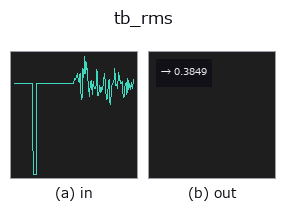

typed op• Data kinds: signal → feature
• Call: fullseye.apply(img, "tb_rms", a=0.5, b=0.5) (the 2-D model is one image plus two scalar knobs a,b∈[0,1])

*The figure is the actual output on a synthetic 128×128 input. Left: input, right: output. Point clouds are drawn as a top-down scatter (brightness = z), 1-D series as a line plot, volumes as the maximum-intensity projection along z, videos as the middle frame, complex images as magnitude; return values that are not pictures are shown as the values themselves.*
*Knob a does not change the output (measured: identical at 0.1 / 0.5 / 0.9).*
*Knob b does not change the output (measured: identical at 0.1 / 0.5 / 0.9).*
Stages (the ops that come before → this op, left to right):
▸ tb_rms: stages (docs site)
RMS level. Scalar for the whole signal, or a framewise array when *frame* is given (a vibration/energy envelope over time).
Typed bridge of the 1d op `rms into the 2-D evolution registry: the same implementation, called under the op(v, a, b) convention. This op has no tunable parameter; a and b` are unused.
• Sample-data catalog (download URLs / licences) — 2-D uses skimage.data (BSD/public domain) plus synthetic images; 3-D lists download URLs for real data sources (Stanford, PDS, …).
• Operator provenance and references — the sources of the research/methods this op family came from.
The program below has been verified to run (same input as the figure). In Studio's help this block becomes buttons that load and run it on the spot.
img_to_signal 0.50 0.50 tb_rms 0.50 0.50
▸ Load this pipeline · Load & run
The examples below call the underlying ledger op rms. This bridge op is the same implementation adapted to the fn(v, a, b) convention, so the behaviour carries over unchanged (only the call form differs).
• lens_design_demo — py -3.11 examples/lens_design_demo.py
• lightfield_depth — py -3.11 examples/lightfield_depth.py
• piv_field_analysis_tour — py -3.11 examples/piv_field_analysis_tour.py
• piv_flow_from_particles — py -3.11 examples/piv_flow_from_particles.py
• poc_battery_electrode_breathing — py -3.11 examples/poc_battery_electrode_breathing.py
• poc_bilateral_asymmetry — py -3.11 examples/poc_bilateral_asymmetry.py
• poc_bump_coplanarity — py -3.11 examples/poc_bump_coplanarity.py
• poc_cad_scan_deviation — py -3.11 examples/poc_cad_scan_deviation.py
• poc_camera_calibration — py -3.11 examples/poc_camera_calibration.py
• poc_dimensional_inspection — py -3.11 examples/poc_dimensional_inspection.py
• poc_exoplanet_transit — py -3.11 examples/poc_exoplanet_transit.py
• poc_fabric_defect — py -3.11 examples/poc_fabric_defect.py
• poc_focus_stacking — py -3.11 examples/poc_focus_stacking.py
• poc_gear_tooth_metrology — py -3.11 examples/poc_gear_tooth_metrology.py
• poc_machine_condition_fusion — py -3.11 examples/poc_machine_condition_fusion.py
• poc_panorama_drift — py -3.11 examples/poc_panorama_drift.py
• poc_print_registration — py -3.11 examples/poc_print_registration.py
• poc_real_stereo_depth — py -3.11 examples/poc_real_stereo_depth.py
• poc_river_surface_velocity — py -3.11 examples/poc_river_surface_velocity.py
• poc_screw_thread_metrology — py -3.11 examples/poc_screw_thread_metrology.py
• poc_solar_limb_darkening — py -3.11 examples/poc_solar_limb_darkening.py
• poc_strain_history — py -3.11 examples/poc_strain_history.py
• poc_surface_roughness — py -3.11 examples/poc_surface_roughness.py
• poc_symmetry_restoration — py -3.11 examples/poc_symmetry_restoration.py
• poc_thermal_radiometry — py -3.11 examples/poc_thermal_radiometry.py
• poc_water_level — py -3.11 examples/poc_water_level.py
• profile_shape_inspection — py -3.11 examples/profile_shape_inspection.py
feature as input)typed)tb_points_to_voxel · tb_estimate_point_normals · tb_iss_keypoints · tb_project_points · tb_render_point_depth · tb_statistical_outlier_removal · tb_radius_outlier_removal · tb_voxel_grid_downsample
*Provenance: ops.py — 2D operator registry. This per-op note is generated by tools/opdocs.py md (do not hand-edit).*
© 2026 Kazufumi Furuse — Fullseye operator documentation. Licensed under Apache-2.0.
{kind=link}